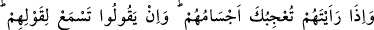
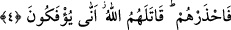

çıkmıştır. Keşşaf Tefsiri’nde de ifâde edildiği gibi bu âyetle münâfıklardan irtidad
eden/dinden dönenler kasdedilmiş olabilir.
“Bu yüzden kalpleri mühürlenmiştir.” İki yüzlülüklerinin cezâsı ve kötü işlerinin
karşılığı olarak kalpleri öyle mühürlenmiştir ki, artık küfürde alışkanlık kazanmışlar ve
kalplerine îmân giremez olmuştur. Gönüllerinin mühürlenmesi kendi amellerinin bir
sonucu olduğundan, “kalplerimiz mühürlendi, nasıl îmân edebiliriz” deme hakları
yoktur.
“Artık onlar hiç anlamazlar.” Îmânın gerçek yönünü ve müminlerin anladıkları
şekilde hakikatini anlamazlar. Lügat itibariyle “fıkıh,” anlamaktır. İlim dilindeki anlamı
ise “şerîat ve din ilmi” demektir. Her ne kadar diğer ilimler anlama yoluyla elde
ediliyorsa da fıkıh, kabiliyet ve anlamak yoluyla kazanılan bilgilerin aslıdır. Bu ifâde,
âsîlerin, fâsıkların bazı kötülüklerini söylemenin faydalı olacağı düşünüldüğünde,
bunun yasaklanmış olan gıybetten sayılmadığını göstermektedir. Aksine bazan faydalı
bile olur. Nitekim Peygamberimiz (a.s.)’in bir hadis-i şerifinde; “Fâcirin/isyankârın
kötülüklerini söyleyiniz ki, insanlar ondan korunsunlar” buyrulmuştur.[140]
el-Makâsidu’l-Hasene adlı eserde şunlar kaydedilmiştir: Üç kişinin gıyabında
kötülüklerini konuşmak haram olan gıybetten değildir. Zâlim hükümdar, işlediği haramı
açıklayan fâsık ve dinde olmayan bir şeyi dindenmiş gibi gösterip insanları bu bid’ate
çağıran kimse.
Kâşânî şöyle demiştir: Münâfıkların îmân edememeleri ve îmânın hakikatini
anlayamamaları, kendilerinde kalmış olan yaratılış nuru ve kabiliyetlerine göre önce
îmân edip sonra da inkâr etmeleri sebebiyledir. Bu nuru nefislerinin sıfatları ve rezil
işlerinin perdeleriyle örttükleri için îmândan mahrum kalmışlardır. Bu kötülükleri son
haddine varmış ve kazandıkları kötülükleri sebebiyle gönülleri mühürlenmiş
olduğundan Rablerinden tamamen mahrum edildiler. Artık onlar peygamberliğin
anlamını, tevhid ilmini ve dini asla anlayamazlar.
4. Onları gördüğün zaman kalıpları hoşuna gider, konuşurlarsa sözlerini dinlersin.
Onlar sanki duvara dayanmış kütükler gibidir. Her gürültüyü kendi aleyhlerine
sanırlar. Düşman onlardır. Onlardan sakın. Allah onların canlarını alsın. Nasıl bu
hale geliyorlar?
“Onları gördüğün zaman kalıpları hoşuna gider.” Fizikî yapıları bakımından
dolgun, iri oldukları ve yüzleri parıldadığı için İbn Übeyy ve onun gibi münâfıkları